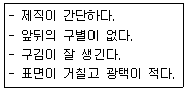
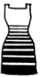
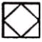

패션디자인산업기사 (2017-03-05 기출문제)
1과목: 피복재료학
1. 열고정이 불가능한 섬유는?
- 나일론
- 레이온
- 폴리에스터
- 폴리프로필렌
(정답률: 42%)

2. 아크릴 섬유의 설명으로 옳은 것은?
- 탄성이 우수하여 5% 이상 신장시켜도 90% 이상 회복된다.
- 양모 섬유보다 비중이 무겁다.
- 드라이클리닝에 사용하는 용매에 대하여 불안전하다.
- 여렝 대한 내열성이 우수하나 다림질 온도는 150℃ 이하가 적당하다.
(정답률: 42%)
3. 다음의 설명에 해당되는 직물은?

- 공단
- 데님
- 개버딘
- 옥양목
(정답률: 70%)
4. 견섬유의 성질에 대한 설명 중 틀린 것은?
- 곰팡이 등의 미생물에 비교적 안정하다.
- 강한 알칼리에 의해 쉽게 손상된다.
- 염색성이 좋지 않다.
- 염소계 표백제에 의하여 손상 받는다.
(정답률: 34%)
5. 다음 중 섬유의 대전성과 가장 밀접한 관계가 있는 성질은?
- 염색성
- 강도
- 내약품성
- 흡습성
(정답률: 75%)
6. 다른 편성물에 비해 강경하여 직물과 비슷하면서, 직물에 비해 구김이 덜 생겨서 양복이나 코트감으로 사용되는 편성물의 조직은?
- 평편
- 고무편
- 양면편
- 터크편
(정답률: 50%)
7. 직물의 용어에 대한 설명으로 옳은 것은?
- 세 가닥 또는 그 이상의 실 또는 천오라기로 땋은 것
- 고분자원료로부터 직접 시트(sheet)상으로 만든 것
- 경사와 위사가 교착된 피륙
- 섬유로 된 얇은 피막
(정답률: 82%)
8. 섬유에 대한 설명으로 옳은 것은?
- 섬유는 유연하고 가늘며 굵기에 대한 길이의 비가 큰 선상(線狀) 물질이다.
- 섬유의 소재는 구하기가 어렵고 가격도 비싼 것이 좋다.
- 섬유의 결정구조는 길이 방향으로 불규칙적인 것이 좋은 제품이다.
- 일반적으로 섬유를 저분자 중합물이라고 부른다.
(정답률: 75%)
9. 수자직의 특성에 대한 설명으로 옳은 것은?
- 사문선이 있다.
- 직물의 조직 중 교차점이 가장 많다.
- 유연하고 표면이 매끄럽다.
- 표리가 없다.
(정답률: 50%)
10. 일광, 세탁, 땀, 열, 마찰 등에 견뢰하기 위하여 면직물에 사용하는 염료는?
- 직접염료
- 염기성염료
- 배트염료
- 산성염료
(정답률: 59%)
11. 양모가 좋은 탄성과 방추성을 가지고 있는 이유가 아닌 것은?
- 시스틴결합
- 조염결합
- 화학결합
- 수소결합
(정답률: 31%)
12. 방적성을 높여 주는 섬유에 있어서 가장 중요한 요소는?
- 열가소성
- 권축
- 배향성
- 함기율
(정답률: 55%)
13. 습식방사법에 의해 만들어지는 섬유는?
- 스판덱스
- 아크릴
- 나일론
- 폴리에스터
(정답률: 42%)
14. 다음 중 섬유의 레질리언스(resilience)에 영향을 주는 것과 가장 관계가 없는 것은?
- 섬유의 표면마찰계수
- 섬유의 탄성
- 섬유의 굵기
- 섬유의 단면
(정답률: 40%)
15. 양모의 내섬유가 오르토 내섬유(ortho cortex)와 파라 내섬유(para cortex)의 두 부분으로 나누어져 있기 때문에 이로 인하여 나타나는 양모의 특성은?
- 축용
- 권축
- 필링
- 수축
(정답률: 48%)
16. 다음 중 내일광성이 가장 좋은 섬유는?
- 폴리아크릴로니트릴계 섬유
- 폴리비닐알코올계 섬유
- 폴리아미드계 섬유
- 트리아세테이트 섬유
(정답률: 42%)
17. 다음 중 산성염료로 염색이 가장 어려운 섬유는?
- 나일론
- 양모
- 견
- 아크릴
(정답률: 34%)
18. 스테이플 파이버(staple fiber)로 만든 옷감이 필라멘트 파이버(filament fiber)로 만든 옷감보다 의류용으로서 더 적합한 이유가 아닌 것은?
- 함기량이 많다.
- 촉감이 부드럽다.
- 광택이 좋다.
- 통기성이 좋다.
(정답률: 28%)
19. 다음 중 양모섬유를 용해시키는 용제는?
- 5% 수산화나트륨
- 70% 황산
- 80% 아세톤
- 35% 염산
(정답률: 34%)
20. 인조섬유에 이산화티탄(TiO2)을 첨가하는 목적으로 가장 옳은 것은?
- 강도 조절
- 광택 조절
- 유연성 조절
- 흡습성 조절
(정답률: 47%)
2과목: 패션디자인론
21. ‘호화스러운, 화려한’의 의미로 브로케이드(brocade), 라메(lame) 등에서 느낄 수 있는 재질감은?
- 소프트(soft)
- 크리스프(crisp)
- 실키(silky)
- 브라이트(bright)
(정답률: 40%)
22. 패션디자인을 하기 위한 요건이 아닌 것은?
- 요소
- 원리
- 적용
- 기술
(정답률: 47%)
23. 패션디자인의 재질 중 추동용 옷감으로 가장 적합하지 않은 것은?
- 시어서커(seersucker)
- 개버딘(gabardine)
- 옥스퍼드(oxford)
- 벨벳(velvet)
(정답률: 43%)
24. 복식의 기원을 설명하는 심리적 보호설의 목적이 아닌 것은?
- 미신적 기대
- 의식의 표시
- 우월성의 표시
- 외부 위험으로부터의 보호
(정답률: 64%)
25. 계속해서 보면 눈에 강한 피로가 오기 때문에 대비 현상이 낮아지므로 짧은 시간 동안의 색채 대비를 원칙으로 하는 대비는?
- 계시 대비
- 연변 대비
- 동시 대비
- 연속 대비
(정답률: 37%)
26. 패션디자인의 원리 중 일정한 크기에 대하여 부분과 부분, 부분과 전체를 나누는 것은?
- 균형
- 통일
- 조화
- 비례
(정답률: 72%)
27. 의복의 배색 효과에 대한 설명 중 틀린 것은?
- 로맨틱한 분위기는 명도와 채도가 높은 페일톤(pale tone)으로 한다.
- 침착한 분위기는 명도와 채도가 낮은 다크톤(dark tone)으로 한다.
- 시원함을 나타내려면 명도와 채도가 약간 높은 덜 톤(dull tone)으로 한다.
- 톤 온 톤(tone on tone) 배색은 동일 색상의 배색에서 톤의 변화를 살린 것이다.
(정답률: 75%)
28. 패션디자인의 요소에 해당하는 것만으로 나열하지 않은 것은?
- 선(line), 실루엣(silhouette)
- 디테일(detail), 트리밍(trimming)
- 재질(material), 문양(pattern)
- 색채(color), 강조(emphasis)
(정답률: 59%)
29. 디자인의 조건 중 합목적성의 기능에 해당되지 않는 것은?
- 물리적 기능
- 심미적 기능
- 생리적 기능
- 심리적 기능
(정답률: 34%)
30. 장신구에 해당하는 것만으로 나열하지 않은 것은?
- 모자, 핸드백
- 구두, 벨트
- 목걸이, 브로치
- 레깅스, 스카프
(정답률: 79%)
31. 서로간의 또는 전체와의 관계에서 적절한 크기나 분량을 의미하는 디자인의 원리는?
- 리듬(rhythm)
- 통일(unity)
- 규모(scale)
- 강조(emphasis)
(정답률: 62%)
32. 대칭 균형을 이루는 복식의 효과로 가장 적합한 것은?
- 세련미
- 성숙미
- 안정감
- 예술성
(정답률: 77%)
33. 인체 위에 입혀진 의상의 분위기를 예술적으로 표현하는 모드화로, 전람회나 장식용으로 많이 쓰이며 광고를 위한 상업용 디자인에도 사용되는 착장화는?
- 도식화
- 디자인화
- 스타일화
- 패션 드로잉
(정답률: 59%)
34. 다음 중 스트레이트 실루엣(straight silhouette)이 아닌 것은?
- H-라인 실루엣(H-silhouette)
- 시스 실루엣(sheath silhouette)
- 배럴 실루엣(barrel silhouette)
- 엠파이어 실루엣(empire silhouette)
(정답률: 72%)
35. 패션 경향 분석에서 소재의 경향에 대한 설명 중 틀린 것은?
- 패션 경향 분석을 위한 소재 정리를 위해 샘플 데이터를 작성한다.
- 기성복 메이커에서는 유행에 맞는 샘플 북스와치를 참고한다.
- 소재의 범위는 한 가지의 테마로 통일하여 유행 경향을 제시한다.
- 소재 메이커에서 발표하는 새로운 소재의 개발 경향이 중요한 정보가 된다.
(정답률: 77%)
36. 강하고 짧은 자극 후에도 원자국이 잠시 선명하게 보이는 것은?
- 부의 잔상
- 정의 잔상
- 색순응
- 동화 현상
(정답률: 50%)
37. 다음 중 동시 대비가 아닌 것은?
- 색상 대비
- 계시 대비
- 보색 대비
- 채도 대비
(정답률: 42%)
38. 패션일러스트레이션의 기능이 아닌 것은?
- 기록성
- 전달성
- 예술성
- 지적 도해성
(정답률: 30%)
39. 다음 디자인에 해당하는 리듬의 원리는?

- 방사상 리듬
- 점진적 리듬
- 반복적 리듬
- 변이적 리듬
(정답률: 84%)
40. 복식 디자인의 목표에 해당되지 않는 것은?
- 시대적 미의 표현
- 디자인 요소의 조화
- 유행성의 강화
- 적합성의 증대
(정답률: 39%)
3과목: 의류상품학 및 복식문화사
41. 고대 이집트 복식 중 허리에 둘러 입는 형태의 의상은?
- 쉬스 스커트(sheath skirt)
- 칼라시리스(kalasiris)
- 하이크(haik)
- 로인클로스(loincloth)
(정답률: 73%)
42. 패션산업의 특성에 해당되지 않는 것은?
- 감각산업
- 부가가치산업
- 지식집약산업
- 위험부담률이 낮은 산업
(정답률: 77%)
43. 조선시대 남자 복식의 특징에 대한 설명 중 틀린 것은?
- 엄격한 신분제도로 인해 계층분화를 강화하였으며, 이와 관련된 복식의 차이가 뚜렷하였고 이를 법규범으로 제도화하였다.
- 왕복은 대례, 제복에 착용하는 면류관과 곤복, 조복으로 원유관과 강사포, 상복으로 익선관과 곤룡포, 국난을 당했을 때 전립에 융복을 착용하였으며 평상시에는 편복을 입었다.
- 백관복 중 조복은 종묘와 사직에 제사를 지내는 왕을 곁에서 모실 때, 제복은 경축일 때, 공복은 공사에 참여할 때 착용하였다.
- 군복은 전립, 이염, 동다리, 전복, 목화로 구성되어 있었다.
(정답률: 67%)
44. 마케팅의 발전과정 중 체인스토어(chain store)가 등장한 시대는?
- 대량생산시대
- 대량유통시대
- 세일즈지향시대
- 전략적 마케팅시대
(정답률: 58%)
45. 다음 중 기업의 마케팅전략인 마케팅 4P에 해당되지 않는 것은?
- 계획(plan)
- 제품(product)
- 가격(price)
- 유통(place)
(정답률: 65%)
46. 기독교의 영향으로 몸을 감추는 형태를 가지며, 화려한 직물과 장식품이 특징적인 복식은?
- 비잔틴 복식
- 로마네스크 복식
- 고딕 복식
- 르네상스 복식
(정답률: 87%)
47. 리테일 머천다이저의 직무에 해당하는 것은?
- 구매처의 선정
- 타깃 마켓 선정
- 타임스케줄 작성
- 상품구성 계획
(정답률: 42%)
48. 르네상스 양식의 복식으로 귀족풍의 위엄이나 아름다움을 과시하는데 효과가 있으며 스커트를 부풀리기 위한 원추형의 버팀대는?
- 파틀렛(partlet)
- 슬래시(slash)
- 버스킨(buskin)
- 파딩게일(farthingale)
(정답률: 84%)
49. 삼국시대 복식에 대한 설명으로 옳은 것은?
- 나관(羅冠)-여자의 관모로 부녀자의 쓰개
- 궁고(窮袴)-폭이 넓은 귀족계급의 복식
- 책(幘)-서민 계급에서 착용하는 고구려의 관모
- 이(履)-신목이 낮은 남방민족이 신었던 신
(정답률: 50%)
50. 급격히 수용 인구가 증가하여 유행을 이루다가 곧 쇠퇴하는 수명이 짧은 패션은?
- 포드(ford)
- 패드(fad)
- 클래식(calssic)
- 패스 패션(mass fashion)
(정답률: 75%)
51. 패션의 전파이론 중 하향전파이론을 설명한 것은?
- 패션은 상류계층에서 시작되어 하류계층으로 확산된다.
- 패션 선도자의 추종자가 동일한 사회적 계층내에 존재한다.
- 사회 하위문화 집단의 패션이 사회 전반에 전파되는 현상을 말한다.
- 패션전파의 동기가 계층 간의 차별화 욕구로부터 집합적인 선택으로 변화하였다.
(정답률: 93%)
52. 광고의 기능이 아닌 것은?
- 상품생산 기능
- 판매지원 기능
- 소비자교육 기능
- 시작확대 기능
(정답률: 60%)
53. 근대복식에 표현된 특징적인 스타일이 시대순서대로 바르게 연결된 것은?
- 로맨틱 스타일→크리놀린 스타일→엠파이어 스타일→아르누보 스타일→버슬 스타일
- 아루누보 스타일→로맨틱 스타일→크리놀린 스타일→버슬 스타일→엠파이어 스타일
- 크리놀린 스타일→엠파이어 스타일→로맨틱 스타일→아르누보 스타일→버슬 스타일
- 엠파이어 스타일→로맨틱 스타일→크리놀린 스타일→버슬 스타일→아르누보 스타일
(정답률: 67%)
54. 다음 중 중세 초기의 바지를 나타내는 것은?
- 클라미스(chlamys)
- 브레(braies)
- 쇼스(chausses)
- 큐클러스(cuculus)
(정답률: 75%)
55. 바로크풍의 화려함을 볼 수 있는 의복으로 영국에서는 페티코트 브리치즈(petticoat vreeches)라고도 불린 것은?
- 트루스(trousse)
- 판달롱(pantalon)
- 퀠로트(culotte)
- 랭그라브(rhingrave)
(정답률: 70%)
56. 스타일리스트(stylist)에 대한 설명 중 틀린 것은?
- 창작자를 의미하여 자신만의 독창적인 디자인을 한다.
- 경우에 따라 코디네이터와 동의어로 사용되기도 한다.
- 가격을 잘 파악하여 상품화할 수 있는 스타일로 완성하는 업무를 수행한다.
- 머천다이저의 보조 역할을 수행하기도 한다.
(정답률: 60%)
57. 1960년대 복식에 영향을 미친 에술사조가 아닌 것은?
- 옵 아트(Op art)
- 팝 아트(Pop art)
- 미니멀리즘(Minimalism)
- 페미니즘(Feminism)
(정답률: 82%)
58. 소비자 행동에 영향을 미치는 주요 요인에 해당되지 않는 것은?
- 문화적 요인
- 국가적 요인
- 개인적 요인
- 심리적 요인
(정답률: 65%)
59. 고대 그리스 복식에 대한 특징 중 틀린 것은?
- 그리스인은 체형 그대로의 아름다움을 중시하는 복식을 하였다.
- 의복의 형식은 전체적으로 균형 잡힌 실루엣을 이루었다.
- 여자들은 몸에 꼭 맞는 쉬스 가운(sheath gown)을 입었다.
- 의복의 종류에는 키톤, 히마티온, 클라미스 등이 있다.
(정답률: 77%)
60. 제품개발에 앞서 어떠한 소비자를 대상으로 상품을 제공하고 판매할 것인가를 명확히 수힙하는 전략은?
- 시장 감각화 전략
- 시장 차별화 전략
- 시장 세분화 전략
- 시장 포트폴리오 전략
(정답률: 84%)
4과목: 패턴공학 및 의복구성학
61. 엉덩이길이의 계측방법으로 옳은 것은?
- 뒤중심 허리둘레선에서 엉덩이둘레선까지의 길이를 잰다.
- 앞중심 허리둘레선에서 엉덩이둘레선까지의 길이를 잰다.
- 오른쪽 옆허리둘레선에서 엉덩이둘레선까지의 길이를 잰다.
- 배꼽점을 지나는 허리둘레선에서 엉덩이둘레선까지의 길이를 잰다.
(정답률: 55%)
62. 봉사 2종류 이상이 서로 얽어지면서 만들어지는 봉환(縫環)으로 보통 본봉이라고 부르는 스티치는?
- 체인 스티치(chain stitch)
- 록 스치티(lock stitch)
- 멀티 헤드 체인스티치(multi head chain stitch)
- 플랫 시임 스치티(flat seam stitch)
(정답률: 64%)
63. 옷감의 겉과 안의 구별 방법에 대한 설명 중 틀린 것은?
- 일반적으로 직물의 양끝에 있는 식서에 구멍이 있는 경우, 구멍이 움푹 들어간 쪽이 안이다.
- 능직으로 짠 모직물의 경우 능선이 오른쪽 위에서 왼쪽 아래로 되어 있는 쪽이 겉이다.
- 나염 옷감은 프린트(print) 모양이 선면한 쪽이 겉이다.
- 더블(double) 너비의 모직물 등은 길이 안으로 들어가도록 접어 말아져 있다.
(정답률: 70%)
64. 스커트의 종류 중 층층으로 개더 분을 넣어 이어 만든 것은?
- 서큘러 스커트(circular skirt)
- 랩 어라운드 스커트(wrap around skirt)
- 티어드 스커트(tiered skirt)
- 고어드 스커트(gored skirt)
(정답률: 67%)
65. 인체계측기구 중 마틴(Martin)식 인체계측기에 해당되지 않는 것은?
- 신장계
- 간상계
- 인체각도계
- 촉각계
(정답률: 39%)
66. 재봉할 때 바늘땀이 건너뛰는 경우가 아닌 것은?
- 톱니가 높을 경우
- 실 끼우는 방법이 틀렸을 경우
- 바늘을 끼운 상태가 불완전한 경우
- 바늘이 굽었거나 바늘 끝이 닿았을 경우
(정답률: 64%)
67. 길 원형 보정에 대한 설명으로 옳은 것은?
- 어깨너비가 넓을 때 어깨너비를 좁혀 주며 겨드랑이 부분을 내려 준다.
- 가슴이 큰 체형은 원형을 P.B점을 중심으로 절개하여 다트분과 앞처짐분을 줄여 준다.
- 처진 어깨의 경우 앞뒷길의 어깨끝점 부분을 내려 주고 진동둘레 밑을 같은 치수로 내려 준다.
- 솟은 어깨는 앞뒷길 어깨끝점 부분을 올려 주고 진동 둘레 밑을 같은 치수로 내려 준다.
(정답률: 69%)
68. 재봉기에서 봉제 시 주어진 땀수에 맞게 천을 앞으로 밀어주는 역할 하는 것은?
- 톱니(feed dog)
- 침판(slide plate)
- 노루발(presser foot)
- 실채기(take-up lever)
(정답률: 54%)
69. 110cm 너비의 옷감으로 긴 소매 블라우스를 만들 때 옷감의 필요량 계산법으로 가장 적합한 것은?
- 블라우스길이+시접
- 블라우스길이×소매길이+시접
- (블라우스길이×2_+시접
- (블라우스길이×2)+소매길이+시접
(정답률: 34%)
70. 다음 중 테일러링할 때 칼라에 심지를 부착시키는 바느질 방법으로 가장 적합한 것은?
- 홈질
- 박음질
- 시침질
- 팔자뜨기
(정답률: 70%)
71. 겉감의 각 부위별 기본 시접 중 시접 분량이 가장 작은 것은?
- 스커트단
- 어깨와 옆선
- 소맷단
- 칼라
(정답률: 72%)
72. 네크라인, 칼라 등의 시접을 안단 쪽으로 꺽은 다음 눌러 박아서 안이 겉으로 미어져 나오지 않게 하는 바느질 방법은?
- 한줄 상침
- 두줄 상침
- 세줄 상침
- 누름 상침
(정답률: 92%)
73. 다음 중 플랫 칼라(flat collar)에 해당하는 것은?
- 숄 칼라(shawl collar)
- 만다린 칼라(mandarin collar)
- 세일러 칼라(sailor collar)
- 셔프 칼라(shirt collar)
(정답률: 64%)
74. 스티치(stitch)의 연결 형태에 따른 재봉기의 분류가 아닌 것은?
- 장식봉
- 편평봉
- 복합봉
- 특수봉
(정답률: 44%)
75. 선이 각져서 얼굴이 넓게 보이며, 목이 굵은 사람이 피해야 하는 네트라인은?
- 브이 네트라인(v neckline)
- 하이 네트라인(high neckline)
- 라운드 네트라인(round neckline)
- 스퀘어 네트라인(square neckline)
(정답률: 59%)
76. 봉제 생산시스템 중 블록 시스템에 대한 설명으로 옳은 것은?
- 2명의 작업자가 한 개조로 구성되어 유사한 공정을 담당한다.
- 소품종다량생산 시스템으로 기종별 특성을 중심으로 편성한다.
- 컴퓨터의 도움으로 생산단계마다 시간의 낭비를 최소화시키는 무재고 생산방식이다.
- 다품종소량생산 시스템으로 각 반을 소형화하여 팀장과 반자이 중심이 되어 독립적으로 공정의 업무와 책임분담을 한다.
(정답률: 70%)
77. 진동둘레와 소매밑단둘레에 개더를 넣어, 주름의 위치와 분량에 따라 형태가 달라지는 소매는?
- 드롭 숄더 슬리브(dropped shoulder sleeve)
- 래클런 슬리브(raglan neckline)
- 퍼프 슬리브(puff neckline)
- 요크 슬리브(yoke neckline)
(정답률: 75%)
78. 공정 분석에 사용되는 아래 기호에 대한 설명으로 옳은 것은?

- 품질검사를 주로 하면서 수량의 검사도 한다.
- 수량검사를 주로 하면서 품질검사도 한다.
- 가공을 주로 하면서 품질검사도 한다.
- 부품검사를 주로 하면서 품질검사도 한다.
(정답률: 67%)
79. 2매 이상의 소재가 서로 포개거나 겹쳐진 상태에서 겹쳐진 부분에 스티치를 1줄 또는 여러 줄을 봉제하는 시임(seam)은?
- LS(lapped seam)
- FS(flat seam)
- BS(bound seam)
- SS(superimposed seam)
(정답률: 31%)
80. 인체를 체간부와 체지부로 구분할 때 체지부가 아닌 것은?
- 어깨
- 머리
- 다리
- 팔
(정답률: 59%)